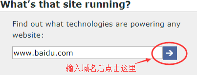
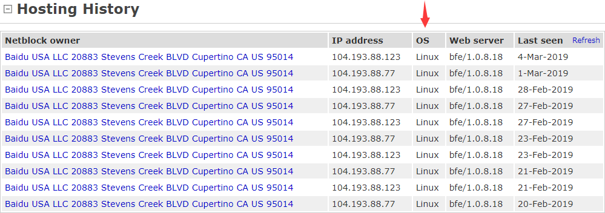

Linux的主要应用领域有哪些？
Linux 似乎在我们平时的生活中很少看到，那么它应用在哪些领域呢？其实，在生活中随时随地都有 Linux 为我们服务着。
网站服务器
用事实说话！访问国际知名的 Netcraft 网站 http:// www.netcraft.com，在 "What's that site running?" 的地址栏内输入想了解信息的网站地址（该功能位于网页右侧），单击箭头图标即可搜索到相关信息，如图 1 所示。
图 1 Netcraft
在搜索结果中会看到网站的操作系统信息。例如，搜索百度网站 www.baidu.com，可以看至 OS 显示为 Linux，如下图所示。

图 2 www.baidu.com 服务器历史
Netcraft 可以理解为一个基于 Web 页面的扫描器，至于扫描，就好像小偷踩点。小偷在偷东西之前拿一堆小广告的宣传单，每天在想要盗窃的户门上插小广告，连续一周，之后去观察，哪家门上7张广告怎么插上的还怎么放在那儿，就要倒霉了，一直没人；哪家门上两张，地下三张，剩下的两张不知道哪儿去了，尽量不下手，不确定什么时候有人；哪家门上和地下都很干净，打死都不能下手，保不齐门一撬开，四个彪形大汉正在打麻将呢！这门技术对窃贼来说叫作踩点，网站扫描和小偷踩点的道理类似……
所以黑客攻击别人电脑的第一个步骤也叫踩点，我们做网络的安全扫描检测与此原理相同，只不过不是发小广告观察结果，而是向对方电脑发数据包，根据返回的应答数据包分析对方电脑的信息。
验证一下哪些大型网站在使用 Linux。世界知名的网站 google.com、qq.com、新浪、网易等，无一例外地应用着 Linux。就连你输入 microsoft.com，会发现微软的下载站等也在使用 Linux。
为什么这么多大型网站会采用 Linux 而不使用 UNIX 或 Windows？其中一个重要的原因就是使用 Linux 成本较低，而 UNIX 和 Windows 都是商业软件；另一个更重要的原因是出于安全和性能方面的考虑。
想更多了解 Linux 在服务器领域的市场份额，请猛击《Linux已经霸占了服务器领域》。
电影工业
1998 年，《泰坦尼克号》那些看起来真实、恐怖的豪华巨轮与冰山相撞最终沉没的场面要归功于 Linux，归功于电影特技效果公司里终日处理数据的 100 多台 Linux 服务器。在过去，SGI 图形工作站支配了整个电影产业，20 世纪 90 年代的影片《侏罗纪公园》中生动的恐龙正是从 SGI 上孕育出来的，SGI 的操作系统 Irix 就是 UNIX 的一种。当时所有动画制作公司都得看 SGI 的脸色。然而，从 1997 年开始，Linux 开始全面占领好莱坞，娱乐业巨擘迪士尼宣布全面采用 Linux，宣告了 SGI 时代的没落，Linux 时代走向辉煌。
好莱坞精明的电影人热情地拥抱 Linux，其中的原因不言而喻。首先，Linux 作为开源软件，可以节省大量成本；其次，Linux 具有商业软件不具备的功能定制化特点，各家电影厂商都可依据自己的制片需要铺设相关平台。到现在为止，使用 Linux 制作的好莱坞大片已经有几百部。
嵌入式应用
由于 Linux 系统开放源代码，功能强大、可靠、稳定性强、灵活而且具有极大的伸缩性，再加上它广泛支持大量的微处理器体系结构、硬件设备、图形支持和通信协议，因此在嵌入式应用的领域里，从因特网设备（路由器、交换机、防火墙、负载均衡器等）到专用的控制系统（自动售货机、手机、PDA、各种家用电器等），几乎涵盖了生活中的所有电器设备，如手机、平板电脑、电视机顶盒、游戏机、智能电视、汽车、数码相机、自动售货机、工业自动化仪表与医疗仪器等。这里，不得不提的是安卓系统（Android）。安卓是基于 Linux 的开源系统，主要适用于便携设备，如智能手机和平板电脑等，是 Google 公司为移动终端打造的真正开放和完整的移动软件。在如今的智能手机操作系统市场上，安卓系统的占有率已然是傲视群雄。嵌入式系统是以应用为中心，以计算机技术为基础，并且软硬件可定制，适用于各种应用场合，对功能、可靠注、成本、体积、功耗有严格要求的专用计算机系统。它一般由嵌入式微处理器、外围硬件设备、嵌入式操作系统及用户的应用程序 4 部分组成，用于实现对其他设备的控制、监视或管理等。
从安卓手机至智能机器人，从大型网站到美国太空站，Linux 都已涉足其中。Linux 的发展震动了整个科技界，动摇了微软一贯以来的霸权，并且为科技界贡献了一种软件制造的新方式。
Top500（www.top500.org）是评定全球 500 台最快的超算系统性能榜单，连续多届，在世界上 500 台超级计算机里，超过 9 成为 Linux 系统！如果你还关在家里面，认为全世界都是 Windows，则无异于坐井观天。世界那么大，出去看看吧！
关注微信公众号「站长严长生」，在手机上阅读所有教程，随时随地都能学习。本公众号由C语言中文网站长运营，每日更新，坚持原创，敢说真话，凡事有态度。

微信扫描二维码关注公众号